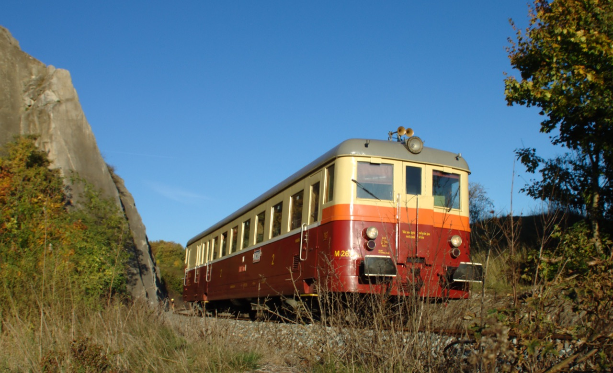
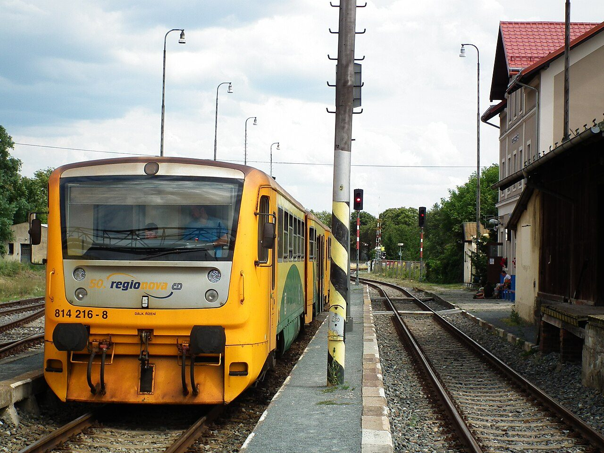
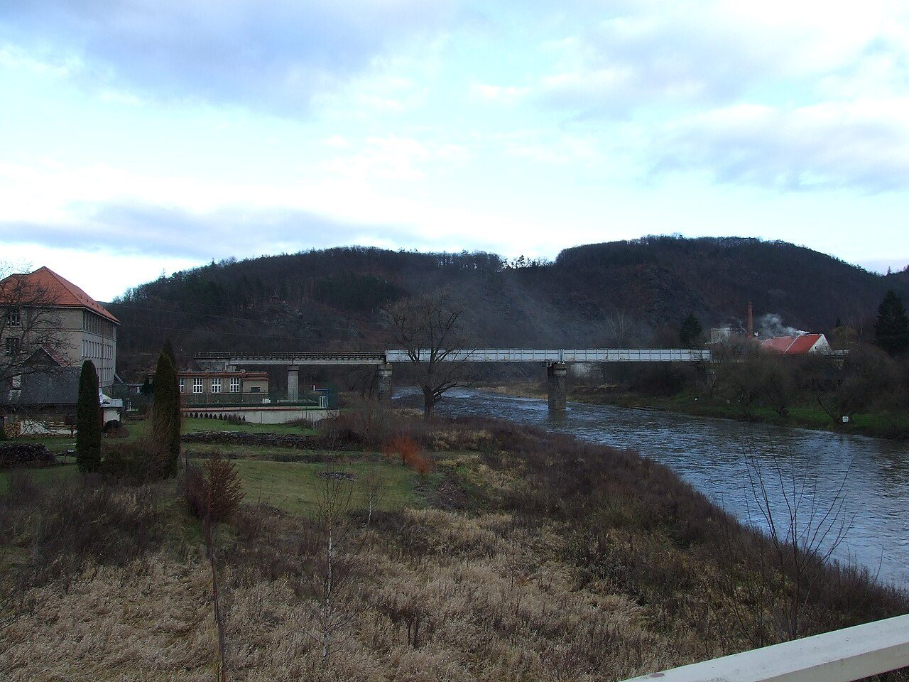

Trať 210
Trať 210
Podél řeky Na celý den
Posázavský pacifik
Tunely, řeka a kamenný viadukt. Výlet, při kterém má smysl zpomalit už ve vlaku.
Praha – Vrané nad Vltavou – Čerčany
Vyber si směr
Na odpoledne, nebo na celý den. U každého výletu najdeš návrh trasy, nápad na zastávku a odkazy pro plánování.
6 výletů k prohlédnutí
Trať 210
Tunely, řeka a kamenný viadukt. Výlet, při kterém má smysl zpomalit už ve vlaku.
Praha – Vrané nad Vltavou – Čerčany

Trať 122Viadukty a výhledy na Prahu z trochu jiné perspektivy. Stačí volné odpoledne.
Praha-Smíchov – Praha-Zličín
 Trať 076
Trať 076
Malá nádraží a vstupní brána do Kokořínska. Pro den, na který si chceš nechat čas.
Mělník – Mšeno

Linka S88Přes Vrané a Čisovice až na konečnou. Z nádraží se můžeš vydat pěšky do Dobříše.
Praha – Vrané nad Vltavou – Dobříš

Přes BerounV Berouně přestoupíš na trať do Rakovníka. Cílem je Křivoklát a procházka k hradu.
Praha – Beroun – Křivoklát
 Do města
Do města
Z hlavního nádraží pokračuj místním vlakem do stanice Kutná Hora město a pak pěšky do centra.
Praha – Kutná Hora hl. n. – Kutná Hora město
Tomuto výběru zatím žádný výlet neodpovídá. Zkus jiný filtr nebo vypni „Jen uložené“.
Časy u detailů jsou návrh, kolik si na výlet vyhradit, nikoli délka konkrétního spoje. Autoři fotografií